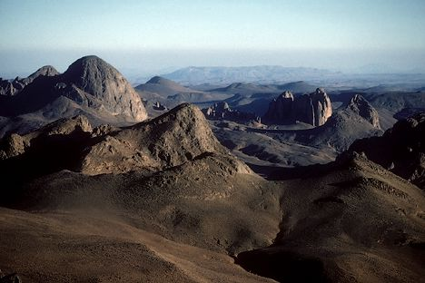
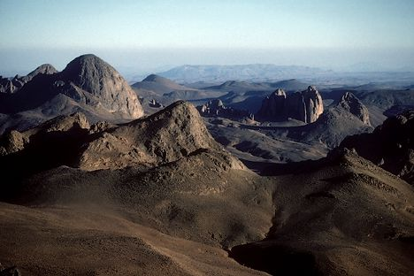

ALGERIE


 



Lorsqu'on pense à voyager au maghreb, on pense immédiatemment au Maroc et à la Tunisie mais rarement à l'Algérie. Cependant ce pays ne manque pas d'atouts et mérite toute l'attention qu'un pays aussi varié et divers le mérite, en voici quelques exemples:

La culture algérienne est marquée par sa diversité, sa richesse, grâce à notamment à ses différentes régions, aux emprunts à d'autres peuples, ainsi que par sa diffusion et à travers le monde. Chaque région, chaque ville ou oasis constitue un espace culturel particulier. La Kabylie, les Aurès, l'Algérois, les Hauts plateaux, la vallée du Mzab, le Gourara, le Hoggar, la Saoura, l'Oranie sont chacune des régions avec des particularités culturelles et parfois linguistiques.

Il existe en Algérie, un des premiers berceaux de l'humanité, plusieurs sites ont été découverts, dans le Sahara qui était alors moins sec et où s'étendaient de vraies savanes. L'histoire de l'Algérie s'insère donc dans l'histoire plus large du Maghreb et remonte donc à des millénaires. Dans l'Antiquité, le territoire algérien connaît la formation des royaumes numides avant de passer sous la domination partielle des Romains, des Vandales, des Byzantins et des principautés berbères indépendantes. De nombreux vestiges sont toujours présents et peuvent être visités
L'Algérie est le 10ème plus grand pays du monde. La diversité des paysages permet d'y trouver des reliefs montagneux (le Tell, les Hauts plateaux, l'Atlas), l'étendue désertique du Sahara mais aussi des plaines et des steppes.
Les villes algériennes ont chacunes leurs spécificités, leurs histoires, leurs monuments et leurs cultures qui les rend unique et qui vous donnerons envie d'en découvrir plus. Près de la mer, dans les montagnes dans le désert, chacune vous apportera son lot de souvenir inoubliables